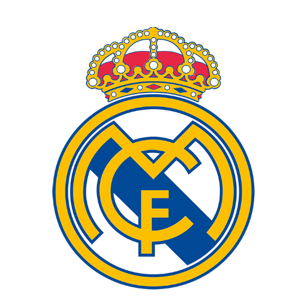
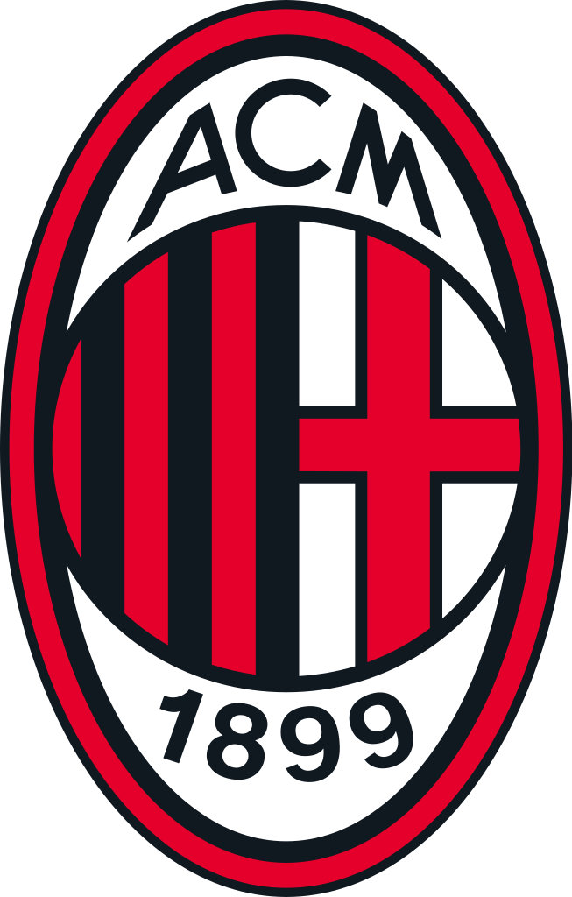

The UEFA Champions League (abbreviated as UCL, or sometimes, UEFA CL) is an annual club association football competition organised by the Union of European Football Associations (UEFA) and contested by top-division European clubs, deciding the competition winners through a round robin group stage to qualify for a double-legged knockout format, and a single leg final. It is one of the most prestigious football tournaments in the world and the most prestigious club competition in European football, played by the national league champions (and, for some nations, one or more runners-up) of their national associations.

| Clubs | Tournaments | Runner Up | Scores |
|---|---|---|---|
|  | 14 | 3 | 1110 |
|
|
6 | 4 | 1030 |  | 7 | 4 | 1065 |
The first time the champions of two European leagues met was in what was nicknamed the 1895 World Championship, when English champions Sunderland beat Scottish champions Hearts 5–3.[11] The first pan-European tournament was the Challenge Cup, a competition between clubs in the Austro-Hungarian Empire.[12] Three years later, in 1900, the champions of Belgium, Netherlands and Switzerland, which were the only existing leagues in continental Europe at the time, participated in the Coupe Van der Straeten Ponthoz, thus being dubbed as the "club championship of the continent" by the local newspapers.[13][14] The Mitropa Cup, a competition modelled after the Challenge Cup, was created in 1927, an idea of Austrian Hugo Meisl, and played between Central European clubs.[15] In 1930, the Coupe des Nations (French: Nations Cup), the first attempt to create a cup for national champion clubs of Europe, was played and organised by Swiss club Servette.[16] Held in Geneva, it brought together ten champions from across the continent.
The first European Cup took place during the 1955–56 season.[21][22] Sixteen teams participated (some by invitation): Milan (Italy), AGF Aarhus (Denmark), Anderlecht (Belgium), Djurgården (Sweden), Gwardia Warszawa (Poland), Hibernian (Scotland), Partizan (Yugoslavia), PSV Eindhoven (Netherlands), Rapid Wien (Austria), Real Madrid (Spain), Rot-Weiss Essen (West Germany), Saarbrücken (Saar), Servette (Switzerland), Sporting CP (Portugal), Stade de Reims (France), and Vörös Lobogó (Hungary).[21][22] The first European Cup match took place on 4 September 1955, and ended in a 3–3 draw between Sporting
The 1967–68 season saw Manchester United become the first English team to win the European Cup, beating two-times winners Benfica 4–1 in the final.[49] This final came 10 years after the Munich air disaster, which had claimed the lives of eight United players and left their manager, Matt Busby, fighting for his life.[50] In the 1968–69 season, Ajax became the first Dutch team to reach the European Cup final, but they were beaten 4–1 by Milan, who claimed their second European Cup, with Pierino Prati scoring a hat-trick.[51] The 1969–70 season saw the first Dutch winners of the competition. Feyenoord knocked out the defending champions, Milan in the second round,[52] before beating Celtic in the final.[53] In the 1970–71 season Ajax won the title, beating Greek side Panathinaikos in the final.[54] the season saw a number of changes, with penalty shoot-outs being introduced.
Trophy and medals
Each year, the winning team is presented with the European Champion Clubs' Cup, the current version of which has been awarded since 1967. From the 1968–69 season and prior to the 2008–09 season any team that won the Champions League three years in a row or five times overall was awarded the official trophy permanently.[85] Each time a club achieved this, a new official trophy had to be forged for the following season.[86] Five clubs own a version of the official trophy: Real Madrid, Ajax, Bayern Munich, Milan and Liverpool.[85] Since 2008, the official trophy has remained with UEFA and the clubs are awarded a replica.[85]
The current trophy is 74 cm (29 in) tall and made of silver, weighing 11 kg (24 lb). It was designed by Jürg Stadelmann, a jeweller from Bern, Switzerland, after the original was given to Real Madrid in 1966 in recognition of their six titles to date, and cost 10,000 Swiss francs.
As of the 2012–13 season, 40 gold medals are presented to the Champions League winners, and 40 silver medals to the runners-up.[87]
This means that, at best, a club can earn €85,140,000 of prize money under this structure, not counting shares of the qualifying rounds, play-off round or the market pool. A large part of the distributed revenue from the UEFA Champions League is linked to the "market pool", the distribution of which is determined by the value of the television market in each nation. For the 2019–20 season, Paris Saint-Germain, who were the runners-up, earned nearly €126.8 million in total, of which €101.3 million was prize money, compared with the €125.46 million earned by Bayern Munich, who won the tournament and were awarded €112.96 million in prize money.[89]